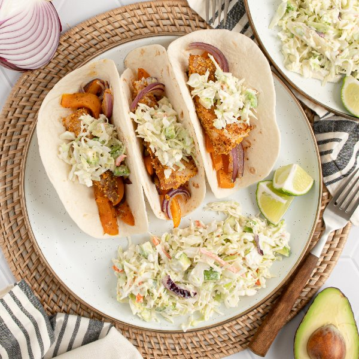

Cornmeal-Crusted Fish Tacos with Bell Pepper, Onion & Avocado Slaw

Nutrition (per serving)
685.6 kcalCalories
37.7 gProtein
73.3 gCarbs
28.2 gFat
Full nutrition table
| Calories | 685.6 kcal |
| Total fat | 28.2 g |
| Saturated fat | 4.8 g |
| Trans fat | 1.1 g |
| Cholesterol | 83.9 mg |
| Sodium | 1254.9 mg |
| Carbohydrates | 73.3 g |
| Fiber | 10.7 g |
| Sugars | 16 g |
| Protein | 37.7 g |
| Potassium | 1279.6 mg |
| Calcium | 184.8 mg |
| Iron | 5.3 mg |
| Vitamin A | 587.7 IU |
| Vitamin C | 268.4 mg |
| Vitamin D | 34 IU |
Cookware
Ingredients
- 1avocado
- 1 ½ lbcod fillet
- 2limes
- 4orange bell peppers
- ¼ cuppolenta (cornmeal)
- ¼ cupranch dressing
- 1 mediumred onion
- 1 (14 oz) bagshredded cabbage (coleslaw mix)
- 12small flour tortillas
- chili powder
- extra virgin olive oil
- salt
Steps
- Preheat oven to 450°F.
- Wash and dry the fresh produce.4 orange bell peppers
2 limes
1 avocado - Peel, halve, and slice onion lengthwise into ¼-inch thick pieces. Transfer to a large baking sheet pan.1 medium red onion
- Trim, seed, and halve bell peppers crosswise, then slice into thin strips. Add to the baking sheet with the onion. Drizzle with oil and season with chili powder and salt; stir to coat and spread out in an even layer.4 tsp extra virgin olive oil
2 tsp chili powder
½ tsp salt - Place baking sheet in the oven (it doesn't have to be fully heated) and bake until veggies start to soften, 6-8 minutes.
- Meanwhile, pat cod dry with paper towels. Cut into 1-inch thick fingers and place on a plate. Sprinkle with cornmeal, additional chili powder, and salt on both sides.1 ½ lb cod fillet
¼ cup polenta (cornmeal)
2 tsp chili powder
½ tsp salt - Once the veggies are soft, remove from the oven, stir, and push to one side of the baking sheet. Arrange cod fingers on the other side of the baking sheet, then drizzle with more oil.2 tsp extra virgin olive oil
- Return baking sheet to the oven and continue to bake until veggies are fork-tender and cod is cooked through, 8-10 minutes more. Remove from oven.
- Meanwhile, using a clean cutting board, juice one lime into a medium bowl. Cut remaining lime into wedges and set aside for serving.
- Add dressing and additional salt to the bowl with the lime juice; stir to combine.¼ cup ranch dressing
¼ tsp salt - Halve and pit avocado; using a spoon, scoop out the flesh and small dice. Add to the bowl with the dressing, along with the cabbage, and stir to combine the slaw.1 (14 oz) bag shredded cabbage (coleslaw mix)
- Warm tortillas in a skillet, oven, or microwave (optional).12 small flour tortillas
- Divide tortillas between plates and fill with roasted veggies, fish, and a small portion of slaw. Serve with remaining slaw on the side and enjoy!